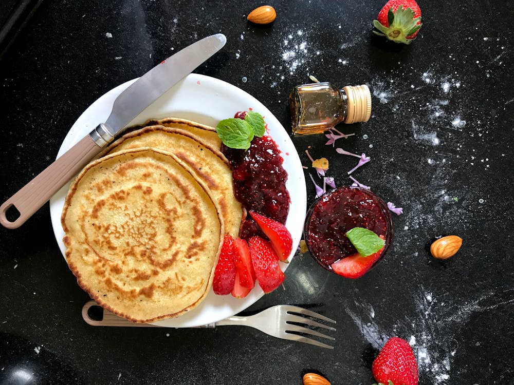

Delicious Pancake Recipe

Ingredients
- 1 cup flour
- 1 tablespoon sugar
- 1 teaspoon baking powder
- 1/2 teaspoon salt
- 1 cup milk
- 1 egg
- 2 tablespoons melted butter
Instructions
Follow these simple steps to make delicious pancakes:
| Step | Description |
|---|---|
| 1 | In a large bowl, whisk together the flour, sugar, baking powder, and salt. |
| 2 | In another bowl, mix the milk, egg, and melted butter. |
| 3 | Pour the wet ingredients into the dry ingredients and stir until just combined. |
| 4 | Heat a non-stick skillet over medium heat and lightly grease with butter or oil. |
| 5 | Pour 1/4 cup of batter onto the skillet for each pancake. Cook until bubbles form on the surface, then flip and cook until golden brown. |
| 6 | Serve warm with your favorite toppings. |